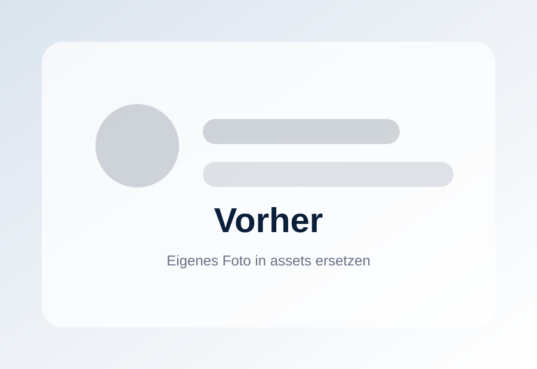
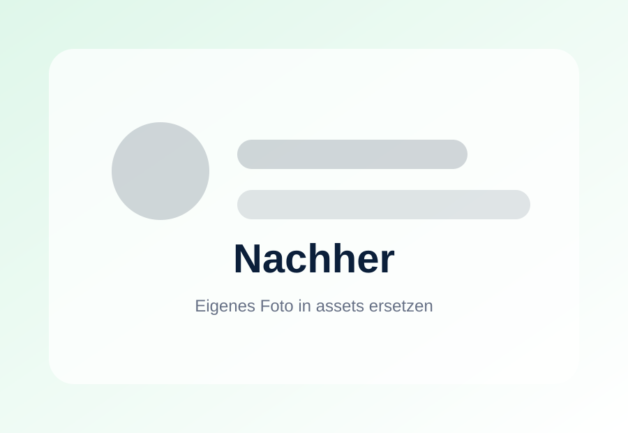

Sanitärservice
Schnelle Hilfe rund um Bad, Sanitär und Wasserleitungen.
- Sanitärinstallation
- Bad- & Sanitärmontagen
- Leckage- & Rohrbruchbehebung
- Reparaturen & Wartung
Unterstützung für Privat- und Geschäftskunden bei Sanitärarbeiten, Kleinreparaturen, technischen Dienstleistungen und Reinigungsaufgaben.
Klar strukturierte Leistungen, schnelle Rückmeldung und eine professionelle Ausführung.
Schnelle Hilfe rund um Bad, Sanitär und Wasserleitungen.
Zuverlässige Unterstützung bei kleineren Arbeiten und Montagen.
Saubere Lösungen für Gebäude, Treppenhäuser und regelmäßige Pflege.
Hier können später echte Vorher-/Nachher-Bilder oder kurze Videos eingefügt werden.


Platzhalter: echte Fotos können einfach im Ordner assets ersetzt werden.


Bei echten Kundenfotos vorher Zustimmung einholen und private Daten verdecken.
NT Hausservice steht für zuverlässige Dienstleistungen in den Bereichen Sanitärservice, Hausservice und Reinigung.
Unser Anspruch ist es, jede Aufgabe sauber, pünktlich und professionell auszuführen. Wir unterstützen Privat- und Geschäftskunden bei Reparaturen, Sanitärarbeiten und Reinigungsdiensten.
Zuverlässigkeit, Qualität und Kundenzufriedenheit stehen bei uns an erster Stelle.
Kontakt aufnehmenFür eine schnelle Einschätzung können Kunden direkt Fotos oder Videos des Anliegens senden.
Name, Adresse und Anliegen per WhatsApp oder E-Mail schicken.
Bei Reparaturen helfen Bilder oder kurze Videos für eine bessere Einschätzung.
NT Hausservice meldet sich schnellstmöglich mit einer Einschätzung zurück.
Der passende Termin wird abgestimmt und die Arbeit wird professionell erledigt.
Schicken Sie Ihr Anliegen am besten mit Name, Adresse sowie Fotos oder Videos. NT Hausservice meldet sich schnellstmöglich zurück.
Diese Nachricht können Kunden direkt per WhatsApp oder E-Mail senden.
◎